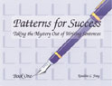
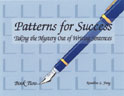
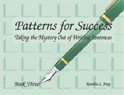
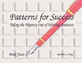
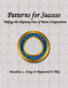
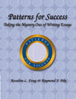
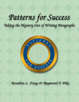
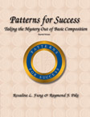

Patterns for Success

Sentence Patterns are the written and oral foundation of the English language. They are the structures upon which the language is built. Repeated Sentence Pattern training gives students the ability to intuitively understand the structure and the flow of the language. Phinnie education believes in the importance of sentence patterns and teach them early in the Learn with Phinnie series.
It may seem odd to assert that the basic patterns of English, the sentences, should be so difficult to teach - especially to English speakers - that we have to create a set of four manuals on constructing sentences. But we must realize that our teaching goal here is effective writing - and writing, the most demanding form of language, is founded on sentence mastery. Usage that is clear and fluent in light conversation or simple spoken transactions in home or street dialects is ineffective for complex analytical expressions in the academic, technical, or business world. A typical remedial student is a headline reader, a TV watcher, a phone user - but neither a serious reader nor a frequent writer. The sentence structures needed to produce educated writing or speech are not "normal" or "native" to these students. Also students are often unfamiliar with the conventions of sentence punctuation. In some ways the remedial writer and the ESL writer face the same problems of learning difficult and demanding sentence patterns as well as setting aside the easy structure of light talk. This is the core of our problem. My solution is to promote sentence mastery through the pattern-repetition-integration methods most commonly used in teaching foreign languages. Ample practice using slot positioning is available in all four manuals, and the instructor decides how much is necessary.

Patterns for Success, Book One, introduces basic English sentence patterns and drills students into using them habitually. Once a basic sentence pattern is mastered, the student is taught to expand the basic thought by adding a prepositional phrase. Coordination using and and but and subordination using dependent adverb clauses are introduced.
ISBN 189075602-4

Patterns for Success, Book Two, reinforces the patterns taught in Book One by offering additional practice of sentence mastery exercises. Aside from introducing the that clause, Book Two offers exercises in pattern expansion using prepositional phrases in different positions. Book Two also continues the practice of sentence combining. Coordination is reviewed first followed by subordination using dependent adverb clauses. Finally, subordination using dependent adjective clauses is introduced.
DemoISBN 189075603-2

Patterns for Success, Book Three, first reviews the basic patterns and the pattern expansion with phrases taught in Book One and Book Two. Aside from introducing the infinitive phrase, Book Three offers more complicated variations as a means of sentence expansion. Finally, it offers an extensive review of the methods of coordination and subordination.
ISBN 189075604-0

Patterns for Success, Book Four, first reviews the sentence patterns taught in Book One, Two, and Three. Aside from introducing the gerund phrase and the noun clause, Book Four goes on to teach more complicated variations of the basic sentence patterns. Throughout the series, the presentation of the basic patterns moves from simple to complex, allowing the instructor to select the book that meets the goals of each course or the individual performance level of each student. Finally, it offers an extensive review of the methods of coordination and subordination.
Download (11 MB)ISBN 189075605-9

Taking the Mystery Out of Basic Composition
- Targets students with no previous knowledge of composition
- Features annotated sample paragraphs and essay at student level
- Provide fully Guided Paragraph and Essay Builders
- Include guided self-evaluation forms
ISBN 189075607-5

Taking the Mystery Out of the Essay
Part One: Develops overall understanding of the essay pattern and writing system
Part Two: Focuses on Introductory, Body, Concluding Paragraph patterns in detail
Part Three: Presents alternative patterns of Introduction, modes of development, and patterns of conclusion
- Employs logical, problem-solving writing pattern throughout
- Adequate Writing and Planning Practice at every stage with progressively more challenging subjects
- Guided Outline Builder and Essay Builder
- Integrated Editing Tips dealing with practical grammar usage, and mechanics
- Guided Essay Evaluator and Editor with each assignment
- Surveys typical entrance and exit writing test patterns
ISBN 1-890756-10-5

Taking the Mystery Out of the Paragraph
- Focuses on the paragraph exclusively
- Employs the patterns and system used in Basic Composition
- Features new sample paragraphs and assignments
- Includes the narrative paragraph as a beginning unit
ISBN 189075609-1

Taking the Mystery Out of BasicComposition: Tutorial Version
- Serves as support workbook for Basic Composition
- Features new sample compositions and assignments
- Works for Lab, Tutorial, or Independent Study
ISBN 1-890756-08-3